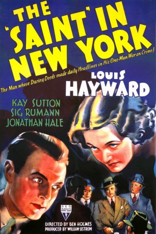

#9184 New York Saints
Alternativ: 10,000 Saints
 
 IMDB-Wertung: 5.9 / 10
IMDB-Wertung: 5.9 / 10  Metascore: 0
Metascore: 0 
Die Coming-of-Age-Geschichte Ten Thousand Saints spielt im New York der 1980er Jahre und folgt Jude einem Teenager aus Vermont, der zu seinem Hippie-Vater zieht, nachdem sein bester Freund Teddy an einer Überdosis Drogen stirbt. Im Zuge dieser Ereignisse schließt sich Jude der Hardcore-Punk Bewegung im East Village an, die unter dem Motto “keine Drogen, kein Sex, kein Fleisch” lebt.
Jahr: 2015
Dauer: 107 Minuten
FSK: 12
Land: USA Studio: Screen Media FilmsTonspuren: DD5.1 - ,
Untertitel:
Auflösung: 1080p (1920x1040) Größe: 7352 MB
Genre: Drama, Musik, Komödie
Regisseur: Shari Springer Berman, Robert Pulcini
Drehbuch: Robert Pulcini
Soundtrack: Garth Stevenson
Darsteller:
- Henry Kelemen als Young Jude
 Julianne Nicholson als Harriet
Julianne Nicholson als Harriet Ethan Hawke als Les
Ethan Hawke als Les Asa Butterfield als Jude
Asa Butterfield als Jude Avan Jogia als Teddy
Avan Jogia als Teddy- Nadia Alexander als Prudence
 Hailee Steinfeld als Eliza
Hailee Steinfeld als Eliza Emily Mortimer als Diane
Emily Mortimer als Diane- Austin Ramsey als Hockey Player
- Jeff O'Donnell als Tory
- Matthew James Ballinger als Hippie
 Emile Hirsch als Johnny
Emile Hirsch als Johnny- Tracy Westmoreland als Photo Booth Bum
- Eric Elizaga als Eric -Army of One Bassist
- Cass Dillon als Syd -Army of One Drummer
- Michael Elian als Security Guard
- Gil Porter als Yuppie
 Charlotte Ubben als Nurse
Charlotte Ubben als Nurse- Eva Kaminsky als Soccer Mom
- Brett Berg als Naked Rioter (uncredited)
 Kevin Cannon als Disabled Veteran (uncredited)
Kevin Cannon als Disabled Veteran (uncredited) Barbara Ann Davison als Protesting Grandmother (uncredited)
Barbara Ann Davison als Protesting Grandmother (uncredited)- Mike Malvagno als Straight Edge Mosher (uncredited)
 Nancy Ellen Shore als Vermont Mother (uncredited)
Nancy Ellen Shore als Vermont Mother (uncredited)- Krista Tunnell als East Village Waitress (uncredited)
- Lawrence Whitener als Homeless Man (uncredited)
- Warren Kelly als Minister
- Ellie Bensinger als Female Classmate #1
- Thomas Hettrick als Rooster
- Calista Bourinaris als Female Classmate #2
- Gaura Vani Buchwald als Krishna Priest
- Doyal Gauranga Das als Harmonium Player
- Giacomo Sumner als Merchandise Guy
- Lauren Milberger als Protester
- Moore Theobald als Boy in Park
- Christopher Chabriel als Mosh Pit Member (uncredited)
- Matthew L. Imparato als 'Picture Car' with Pedro Marcelino (uncredited)
- Macey Kurtz als CBGB Attendee (uncredited)
- Pedro Marcelino als Drug Dealer (uncredited)
- Little Montero als Larry (uncredited)
Datei: X:\2015(N-Z)\New York Saints (2015, FSK12, 1920x1040).mkv seit 19.07.2018
Festplatte: HD 2015(A-Z)
 Es gibt insgesamt 161 Filme in der Gruppe '2015(N-Z)'
Es gibt insgesamt 161 Filme in der Gruppe '2015(N-Z)'